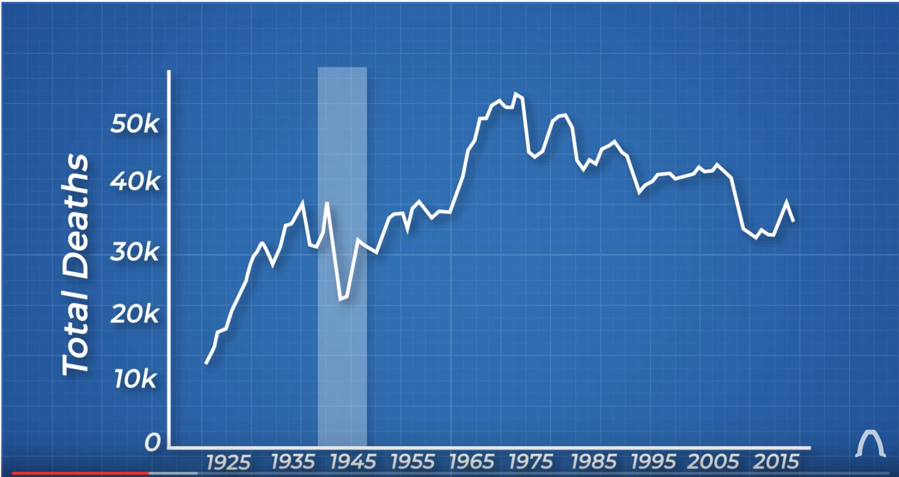
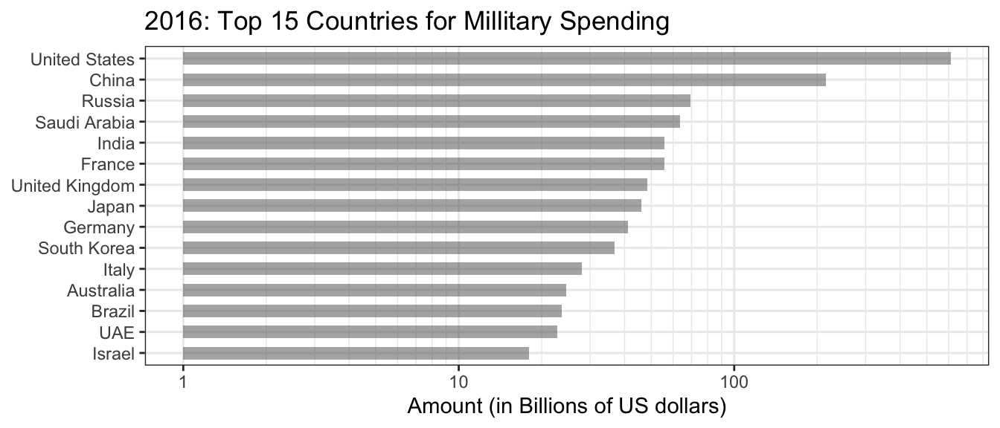
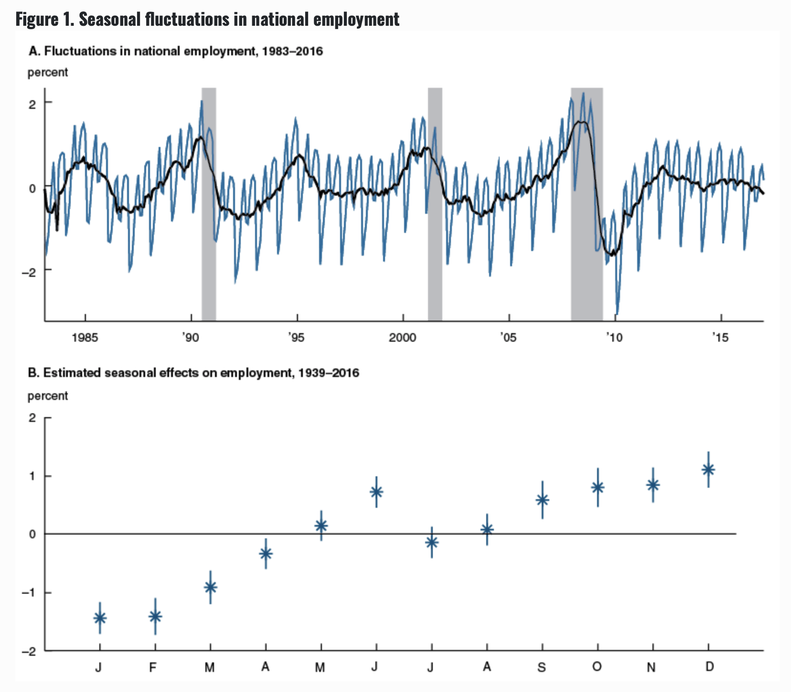
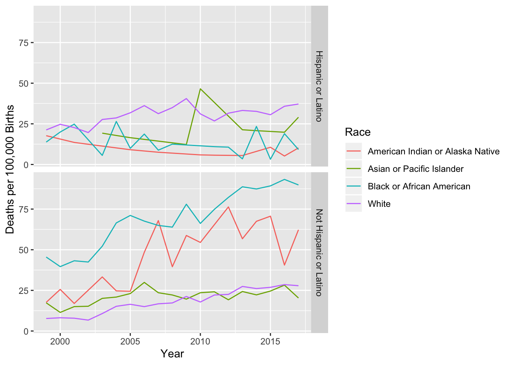

Chapter 7 What to Graph
7.1 Examples
7.1.1 Example: Vehicle Deaths
I want to understand how vehicle safety has changed over time. The first statistic we might consider is just the number of vehicle deaths per year.
The following image comes from the YouTube channel Real Engineering.  But this isn’t a good graph because the number of people driving isn’t consistent over time. But what is the appropriate scaling?

7.1.2 Example: Military Budgets

In this data, the amount spent seems inappropriate because of the number of individuals per country is not the same. Furthermore, rich countries can spend more money without it affecting their populace.
7.1.3 Example: GDP
Should we be using GDP to measure economic “success”?
7.1.4 Example: Cummulative Iphone Sales
Tim Cook displaying total iPhone sales instead of quarterly sales.
7.1.5 Example: Disease Mortality vs Fatality Rates
In 2020, the Corona virus is spreading across the global. Many news reports are confusing fatality and mortality rates. These two rate statistics differ by what the denominator is.
\[\textrm{Fatality Rate} = \frac{\textrm{# of Deaths}}{\textrm{# of People Infected}}\] \[\textrm{Mortality Rate} = \frac{\textrm{# of Deaths}}{\textrm{# of People Exposed}}\]
The fatality rate gives the risk of dying if you are infected, while the mortality rate gives the risk of a random person catching and dying from the disease. Fatality measures how sever the disease infection is while mortality measures how dangerous it is to the whole population.
To see the difference between these statistics, consider two populations infected by different diseases.
1000 People, 300 Sick, 100 Die
\[\textrm{Fatality Rate} = \frac{\textrm{# of Deaths}}{\textrm{# of People Infected}} = \frac{100}{300}= 33.3\%\] \[\textrm{Mortality Rate} = \frac{\textrm{# of Deaths}}{\textrm{# of People Exposed}} = \frac{100}{1000} = 10\%\]
1000 People, 50 Sick, 40 Die
\[\textrm{Fatality Rate} = \frac{\textrm{# of Deaths}}{\textrm{# of People Infected}} = \frac{40}{50}= 80\%\] \[\textrm{Mortality Rate} = \frac{\textrm{# of Deaths}}{\textrm{# of People Exposed}} = \frac{40}{1000} = 4\%\]
The first population has a more widespread disease outbreak which ultimately kills more people, but the second population has a disease that is more devastating to those who catch it but fewer people catch the disease.
7.1.6 Seasonal Unemployment
Employment in various sectors of the economy often has a seasonal component. For example, the construction industry has much higher employment in the summer while the retail sector has a strong peak in October-December.
Across all sectors, employment is lowest in January - April, and becomes higher in the late summer & fall. For a more detailed discussion see this paper published by the Federal Reserve Bank of Chicago.

Because the seasonal aspect is quite predictable, it is possible to report the black line in Figure A above instead of the monthly raw employment numbers. Because the seasonal fluctuations are quite large, if we don’t account for seasonality, we would miss fundametal economic changes.
So instead, we typically hear about changes to the seasonally adjusted employment rate.
7.1.7 Example: Age Standardization
Suppose we have two populations with the following age structures and proportion that believe that vaping is “very harmful”.
Suppose that in each population we’ve asked if individuals believe that vaping is “very harmful”.
| Population | Agree |
|---|---|
| A | 0.35 |
| B | 0.3798 |
However It turns out that Population B has a much older population. Here I am considering population sizes of 100 individuals just to make the math convenient, but these could be arbitrary population sizes.
Population Sizes
| Age | A | B |
|---|---|---|
| 18-29 | 40 | 10 |
| 30-49 | 30 | 20 |
| 50-64 | 20 | 30 |
| 65+ | 10 | 40 |
Is Vaping Harmful? (By age group and population). In this table we present the information as # Individuals (proportion think vaping is harmful). In this fashion the value 40 (0.25) indicates the group contains 40 people, and 25% of those believe that vaping is harmful.
Here we see that, by age group, people in population B tend to be more permissive opinion about vaping than population A. The issue is that population B has a much older population.
| Age | A | B |
|---|---|---|
| 18-29 | 40 (0.25) | 10 (0.2) |
| 30-49 | 30 (0.4) | 20 (0.35) |
| 50-64 | 20 (0.4) | 30 (0.366) |
| 65+ | 10 (0.5) | 40 (0.45) |
| Total | 0.35% | 0.38 |
What if Population A had the same demographics as Population B? Lets calculate the “Average Demographic Distribution” and then do the multiplication.
To calculate the average demographic distribution is calculate the percentage of individuals in each age group. For the 18-29 group, there are \(40+10=50\) individuals within the total population of \(n_A + n_B = 100+100 = 200\) and so the average demographics have \(50/200=1/4 = 25\%\) of people in the 18-29 age group.
| Age | A | B | A.Std | B.Std |
|---|---|---|---|---|
| 18-29 | 40 (0.25) | 10 (0.2) | 25 (0.25) | 25 (0.2) |
| 30-49 | 30 (0.4) | 20 (0.35) | 25 (0.4) | 25 (0.35) |
| 50-64 | 20 (0.4) | 30 (0.366) | 25 (0.4) | 25 (0.366) |
| 65+ | 10 (0.5) | 40 (0.45) | 25 (0.5) | 25 (0.45) |
| Total | 35% | 38% | 38.75% | 34.4% |
Next we consider an example of where this might be helpful. Our example comes from a website “Our World in Data” which tries to provide useful data sets and analysis to address major societal issues. Here we will consider suicide rates in different countries around the world.
7.1.8 Example Maternity Deaths
Suppose that we are interested the mortality rates that women experience related to pregnancy and birth.
Step One: Variable of interest
Clearly we want to have some sort rate adjustment to account for different population sizes. However, because not all women give birth, we shouldn’t just consider all women. Instead we’ll consider this maternal deaths per 100,000 live births.
Step Two: Context
Approximately 700 women per year die due to complications of pregnancy or child birth in the United States. This turns out to be ~17.2 deaths per 100,000 births, or about 1 maternal death per 5,000 live births.
Step Three: Conditional Statistics
- How does this vary between countries?
- How does this vary between states?
- How does this vary between socio-economic or ethic groups?
Step Four: Finding Data
- Typically it is easy to google for a single statistic for a country. However, it is often difficult to find a dataset that allows for the conditional statistics, such as between states or ethnic groups.
- I found data from the Centers for Disease Control. The CDC’s Wonder on-line access allows you to format data requests for a wide variety of scenarios.
Now we find some data from the CDC…
- Problem: Can’t get State by Year data due to confidentiality…
- Year by race?

7.2 Exercises
Download from the STA 141 GitHub raw data directory files for the murders per state as well as population sizes of each state. The murder information data file contains information about the number of murders per state, how many of those murders were gun related, and the rate of gun ownership. I got this information from Wikipedia, and it isn’t clear if gun ownership rate is the percent of residents that owns one or more gun or if it is the number of guns per state divided by the number of residents.
- Join the state population and murder information data sets.
- Calculate the murder rate and gun murder rate for each statement per 100,000 residents.
- Make a scatter plot of gun ownership rate vs the gun murder rate.
Download from the STA 141 GitHub raw data directory files for the suicide rates per state. Join this data to data you used in problem 1. Create a scatterplot graph of suicide rate vs gun ownership rates.
Given the context of the problems (1) and (2), what follow-up questions come to mind? Given at least two follow-up questions and the graphs you would create to address those questions. Identify the data you would need to create such a graph. Context: At this point, you are not expected to find the data, but identify what variables of interest you would need.